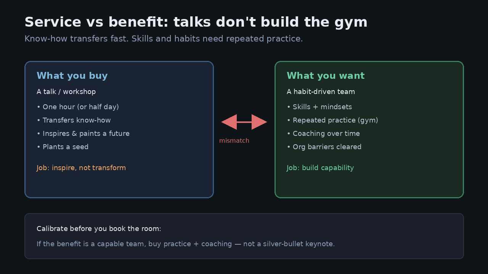

A one-hour talk cannot buy a habit-driven team — build the gym
Source: Teresa Torres (@ttorres) and Petra Wille, “Training Expectations” (Recorded Conversations)
original post
What it claims
Leaders often ask: “You’ve got twelve people and one hour at the offsite — can someone teach continuous discovery in that hour?” Teresa Torres’s answer is a flat no. With Petra Wille she names the mismatch: people request a service (a talk or workshop) expecting a benefit (a capable, habit-driven team) that the service cannot deliver. Continuous discovery is many skills, habits, and mindsets built through repeated practice — not one skill you pick up in a workshop. Know-how transfers fast; skills and mindset shifts need a “gym.” A talk’s real job is to inspire, plant a seed, and paint a different future — not to change behavior on its own. Talks deliver most when embedded in longer coaching; open Q&A often surfaces org barriers that must be fixed before any training works; and buyers of training often don’t know enough about discovery to know what training they actually need.
Why it matters for a PO
POs get volunteered into “discovery kickoffs” and all-hands keynotes that are supposed to transform the team. When nothing sticks, the PO is blamed for not “adopting the method,” while the real miss was buying inspiration and calling it capability. Naming the service/benefit split lets you push for practice reps, coaching, and barrier-clearing instead of another silver-bullet hour.
3 takeaways
- Match the buy to the benefit: a talk inspires; a gym builds skill; a coaching program changes habits.
- Know-how ≠ capability — if you only transferred slides, you did not buy a habit-driven team.
- Before booking the room, surface org barriers (access to customers, decision rights, calendar space); training cannot fix those.
Practice this week
Write two columns for the next “discovery training” request: service (talk / workshop / coaching / weekly practice) and benefit (inspired team / shared vocabulary / weekly interview habit / shipped experiments). If they don’t match, rewrite the ask to buy the gym — e.g. six paired interview reps with a coach — instead of a one-hour keynote.